충남대학교 컴퓨터공학과 김상하 교수님의 "컴퓨터 네트워크" 강의를 필기한 내용입니다.
다소 잘못된 내용과 구어적 표현 이 포함되어 있을 수 있습니다.
World Wide Web
- www : 전 세계적으로 연결된 정보 저장소
Client, Server
- 익숙한내용이니까 금방금방 넘어가자고
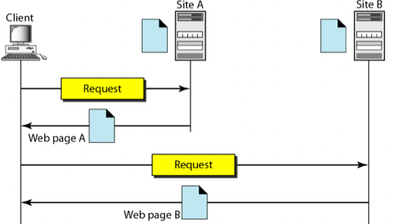
- 이런식으로 Client와 Server로 구성되어 있고 Server가 Web Page를 가지고 있으며 Client가 그걸 요청하면 전달해주는 식으로 돌아간다
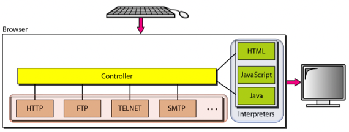
- 그리고 이건 Client쪽 Browser의 구조를 나타낸건데
- Web Document들을 HTTP, FTP 등의 Client Protocol을 이용해 가져오고
- 그걸 HTML, JS 등을 해석하는 Interpreter을 통해 화면에 뿌리게 되는데
- 이때 어떤 프로토콜을 이용할건지, 그리고 그걸 받아서 어떤 인터프리터를 사용할건지 연결해주는 것이 Controller가 하는 역할이다
URL
- URL(Uniform Resource Locator) 는 Client가 자기가 원하는 정보가 Server의 정확히 어디에 있는지, 그리고 어떻게 가져와야 하는지를 명시하는 방법이다
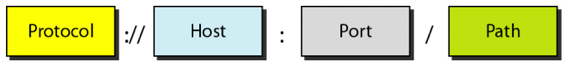
- 지긋지긋하제?
- 제일 먼저 Protocol을 명시한다 - HTTP인지, HTTPS인지 등
- 그리고 Host는 숫자 혹은 DNS로 표현된 서버의 IP를 나타낸다
- Port는 말그대로 포트번호고
- Path는 서버 내에서의 디렉토리 구조상에서의 위치를 나타내는 것
Cookie
- 얘가 뭔지는 이미 알테니까 얘를 왜쓰는지를 중점적으로 보면
- HTTP는 Stateless - Client의 상태를 저장하지 않음. 즉, Client가 누구인지, 이전에는 어떤 요청을 해왔는지 등을 Server는 저장하지 않기 때문에 모른다 - 이기 때문에
- 작은 데이터 조각인 Cookie를 Client가 Server에게 요청을 보낼때 같이 보내 자신의 State를 알려주게 되는 것
- 따라서 다음과 같은 용도로 사용될 수 있음
- Session Management : Client와 Server가 교류하는 기간을 하나의 Session이라고 한다면 해당 Session을 컨트롤하는 용도나
- Personalization : Server로 하여금 Client 각각을 식별하게 하는 용도니
- Tracking : Client의 행동을 기록하고 분석하는 용도로 쓰이게 된다
Web Documents
- Web Document는 Web에서 다루는 문서들을 의미하는 건데 이것도 아는거니까 금방금방 지나가자고
Static Document
- Server에서도 별다른 작업을 하지 않고 Client에서도 받은 다음에 화면에 뿌려주기만 하는 문서
- 뭐 Raw HTML 파일 이 여기에 해당한다고 할 수 있다 - HTML파일을 요청하면 그냥 Server에서도 요청받은 HTML파일 주면 되고 Client에서도 그거 그냥 렌더링하면 되니까
- 그래서 Client는 Static Document를 요청할때마다 같은 결과물을 받게 된다
Dynamic Document
- 클라이언트의 요청에 대해 Server가 동적으로 Document를 만들어서 제공해주는 문서
- 뭐 php의 경우에도 그렇고 전에 DB 텀프할때도 nodejs로 html 생성해서 응답했자네 - 이런거 말하는거임
- 따라서 Client는 Dynamic Document를 요청할때마다 그 결과물이 달라질 수 있다
Active Document
- 이건 Client의 요청으로 Server가 보내준 파일이 Server에서 렌더링해서 준게 아니고 Client가 직접 렌더링해야되는 문서를 말한다
- JS 말하는거같은데 좀 다른거같다 - 수업때는 Java Applet이라는거 알려주던데
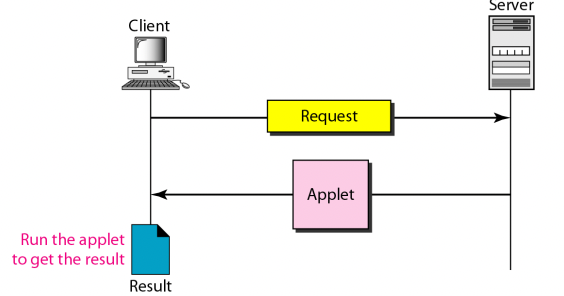
- 위 그림처럼 요청에 대해 Applet을 응답하고 이것을 Client 쪽에서 실행시켜서 결과물을 얻는댄다
HTTP
- HTTP(HyperText Transfer Protocol) 은 Web Document를 통신하기에 최적화된 Application Layer Protocol이다
- HTTP는 FTP와 SMTP를 합쳐놓은 것과 비슷하게 작동하는데, 몇가지 차이점이 있다
- 우선 파일 전송이 가능하다는 점에서는 HTTP와 FTP가 동일하지만, HTTP는 TCP Connection을 하나만 하는 반면에 FTP는 두개를 한다
- 그리고 (파일을 전송하더라도 문서화하여 전송하기 때문에)문서의 형태로 통신한다는 점에서는 SMTP와 유사하지만 SMTP는 보통 Mail Server를 거쳐서 통신하는 경우가 많지만 HTTP는 목적지 서버로 바로 달린다는 점에서 차이점이 있다
- 근데 강의시간에서는 PDF에서 소개된 SMTP와의 차이점은 부정확하댄다 - SMTP도 서버로 바로 보낼 수 있기 때문
- 싱하형이 말한 FTP 혹은 SMTP와 HTTP의 가장 큰 차이점 은 FTP나 SMTP의 경우에는 Application Layer Level에서 Command를 사용해 Connection을 맺고 할일을 한 뒤에 또 Command를 이용해 Termination을 하게 되지만 HTTP에서는 그런거 없이 Command도 보내는 메시지에 포함시켜 한번의 통신으로 결과물을 받아낸다는 것이다
- 그리고 이러한 성질이 HTTP에서의 Stateless와 연결되는데 FTP나 SMTP의 경우에는 Command가 오가며 연속적인 흐름이 존재하지만 HTTP는 한번 왔다갔다하면 끝이기 때문에 이러한 Stateless가 생기게 된다더라
- 알고있었겟지만 HTTP는 TCP를 이용하고 Well known port로는 80번을 사용한다
HTTP Transaction
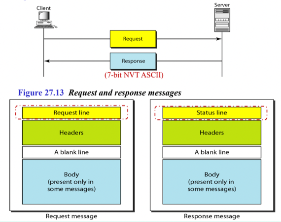
- 반복학습이 짱이야 그지
- 일단 웹프에서 배운 내용 다시 짚어보면 HTTP의 메시지 포맷은 요청의 경우 Request Line, 응답의 경우에는 Status Line이 드가고 그 다음부터는 둘 다 Header가 드간 뒤 한칸 공백을 두고 Body가 드가게 된다
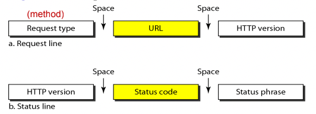
- 그리고 Request Line의 경우에는 METHOD URL HTTP_VER이런식으로HTTP 메소드와 URL, HTTP 버전이 공백을 두고 한줄에 위치하고
- Status Line의 경우에는 HTTP_VER STATUS_CODE STATUS_MSG 이런식으로 HTTP버전과 상태코드, 상태메시지가 공박을 두고 한줄에 들어가게 된다
- 이제 웹프에서와는 좀 다른 시각으로 이 메시지들을 보면
- SMTP와 좀 비교를 해보면 만일 HTTP 메시지를 SMTP로 바꿔보면 Request Line에 있던것들이 Command로 보내질 수 있고 Status Line에 있던애들이 Responce로 보내질 수 있으며 나머지 Header와 Body는 메일의 Content로 들어가는 식으로 연관지을 수 있다
- SMTP에서 무슨 요청을 보낼건지와 어디로 보낼건지 등을 Command로 보냈듯이 HTTP의 경우에는 그런것들이 다 첫번째 줄에 들어가게 되기 때문
- 즉, 위에서 말한 HTTP는 SMTP와는 다르게 Command나 Response까지 전부 하나의 메시지에 합쳤다는게 바로 이소리임
- Method와 Status Code에 대해서는 너가 아는 정도로도 충분하다 - 모르면 검색해
Header
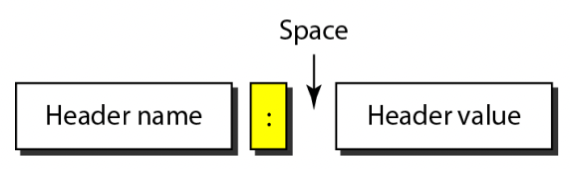
- HTTP에서 요청과 응답에 대한 다양한 정보들을 Header에 담게 되는데
- 위처럼 HEADER_NAME: HEADER_VALUE의 포맷으로 명시된다
- 헤더의 종류에는 4가지가 있다는것 정도와 각각의 대표적 예시 몇개 챙거가거라
- General Header : 특정하게 분류하지 않은 공통적인 내용
- Date : 날짜
- MIME-version : HTTP 메시지의 경우 7-NVT ASCII만을 송수신 할 수 있기 때문에 SMTP에서처럼 Non-printable bitstream은 인코딩이 드간다 - 이때 사용되는 MIME의 버전을 나타내는 것
- Request Header : Client가 보내는 요청에 대한 정보들
- Accept : Client가 원하는(받아들일 수 있는) 파일 형식
- Authorization : 요청에 필요한 권한을 담는 부분
- Host : 요청을 받아줄 Server의 host와 port
- Response Header : Server가 보내는 응답에 대한 정보들
- Server : 응답을 보내는 서버에 대한 정보
- Entity Header : 응답으로 보내는 Body에 대한 구체적인 정보들
- Content-length : 응답 Body의 길이
- Content-type : 응답 Body의 파일 파입 - 웹프에서 말한것처럼 파일을 처리하는 방법만 알려주면 모든 종류의 파일을 송수신하고 받아서 사용할 수 있게 할 수 있다는데 이부분이 그거임 - 파일의 타입을 명시해서 Client가 bitstream을 어떻게 처리해야될지 알려주게 됨
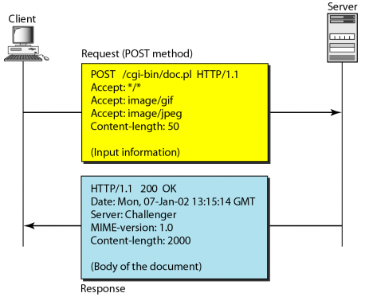
- 예시 - 읽어보고 그렇구나만 해주면 됨
Persistent VS Non-persistent
- 일단 Persistent Strategy는 한번의 Request - Response에서 한번의 TCP Connection을 맺었다가 끊는 것을 말하는데
- 당연히 이건 비효율적 이다 - 왜냐하면 TCP는 기본적으로 Three Handshake를 해서 Connection을 한 다음에 데이터를 전송하고, 전송한 다음에는 Terminate를 하기 때문에 데이터 전송 앞뒤로 추가적인 과정이 붙어 전송세션을 오래 끄는게 이득이고
- 앞에서 배운것처럼 TCP는 Slow Start를 하기 때문에 전송속도가 느리게 시작해서 점차 빨라지게 된다 - 따라서 전송을 짧게 여러번 하면 Slow Start를 여러번 하게 되므로 그만큼 평균속도는 느려지는 것
- 그래서 Non Persistent Strategy는 TCP Connection을 한번 하고 나면 Request - Response를 여러번 하고, 만일 일정기간동안 Request - Response가 없으면 그때 Terminate되는 Time out 전략을 쓰는 것을 의미한다
- 저번에 어떤새끼가 블로그에서 HTTP는 한번의 Request - Response에서 한번의 TCP Connection을 맺었다가 끊는다 라고 Persistent 전략을 사용하는 것으로 말해놨는데
- 저것도 어느정도는 맞는말일수도 있지만 HTTP1.1부터는 Non Persistent를 Default로 하고 있다
Proxy Server
- HTTP는 Proxy Server기능을 제공하는데 이건 원래 서버의 기능을 대리해주는 서버를 말한다
- 이게 뭔말이냐면
- Client A가 B를 거쳐서 Server C에게 요청을 하고 받는 과정에서
- B는 C가 보내는 응답을 저장해놓고 있다가
- 또 다른 Client D가 B를 거쳐서 C에게 요청을 하면
- 그 요청이 C까지 안가고 B가 저장해놓은 응답을 보내주는 것을 말함
- 즉, Proxy Server는 원래 Server의 응답을 저장해놨다가 누군가가 요청을 해오면 원래의 Server까지 안갔다와도 되게끔 Proxy Server가 대신 응답함으로써 응답을 좀 더 빨리 받을 수 있게 하는 것을 의미한다
- 당연히 이 기능을 이용할때도 DNS의 Authorize기능처럼 해당 응답이 원래의 Server가 아니고 Proxy Server에서 왔음을 Client에게 알리게 된다
HTTP/2
Problems of HTTP 1.x
- HTTP 1.x의 문제점은 한번에 하나의 Request - Response가 가능하다는 것이다
- 뭐 HTTP 1.1부터는 Non Persistent가 됐다고 하더라도 이건 TCP를 연결하고 끊는 시간 낭비를 줄이는 정도이고
- 하나의 Request를 보내고 나면 그것의 Response가 올때까지 Client는 추가적인 요청을 할 수가 없다
- 따라서 하나의 웹페이지를 구성하기 위해서는 많은 Resource들이 필요한데 얘네들을 Parallel하게 보내지 못하고 Sequential하게 보내기 때문에 필요한 Resource들을 모두 요청하고 받는데까지 시간이 오래걸려 웹페이지 로딩이 오래걸리게 되는 것
- HTTP에서도 Parallel하게 요청을 보낼 수 있는 방법이 있긴 하다 - TCP Connection을 여러개 맺으면 Parallel하게 보낼 수는 있지만 TCP는 연결할때 Buffer도 준비해야 하고 Handshake도 해야 하는 등 사전준비가 많이 필요한 작업임 - 따라서 TCP Connection을 여러개 맺는 것으로도 속도 저하는 해결하지는 못한다
- 이런 HTTP 1.x에서의 Parallel하게 요청을 보내고 받지 못하는 문제를 Head-of-Line Blocking이라고 한다
HTTP/2
- 위와 같은 배경에서 HTTP/2가 등장하게 되는데
- HTTP/2를 설계할때 가장 중점적이 되었던 것은 아래의 세 가지 이다
- 기존의 HTTP Message Interface가 바뀌어서는 안된다는 것
- 즉, HTTP 1.x에서의 HTTP Method, Status Code, URI, Header Field등이 이전과 동일해 HTTP Protocol을 이용하는 입장에서는 HTTP 1.x과 HTTP/2간의 호환성 문제가 생기면 안된다는 것
- Parallel Request - Response가 가능해야 된다는 것
- TCP Connection은 기존과 동일하게 하나만 유지할 것
- 기존의 HTTP Message Interface가 바뀌어서는 안된다는 것
Request - Response Multiplexing
- 이제 위와 같은 문제점들을 어떻게 해결했는지 확인해보자고
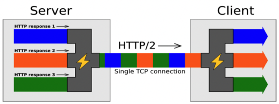
- Parallel과 Single TCP Connection을 모두 잡는 것의 핵심은 Multiplexing을 이용하는 것이다
- 즉, Parallel하게 정보를 전송할 수 있도록 Bidirectional Stream을 여러개 제공하여 각 Stream에 병렬적으로 Message를 송수신 할 수 있게 하는 것
- 그리고 Stream들을 하나로 모으는 Multiplexing을 한 다음 수신지에 도착해서는 그것을 다시 Demultiplexing하여 양 끝단에서는 마치 TCP Connection을 여러개 맺은 것 같은 착각에 빠지게 한다
- 그래서 위 그림처럼 되는거임 - 여러개의 Stream에서 나온 Frame들이 일렬로 쭉 들어선 모양으로 Multiplexing되어 Single TCP Connection을 타고 가게 되고 도착해서는 다시 Demultiplexing되는 것
- 저런식으로 여러개의 Stream에서 나온 Frame들이 일렬로 사이사이 끼어들어간 형태로 전송되는 것을 Interleaved Sequence of Frames라고 표현한다
- 근데 위 그림에서 보이는 것처럼 Message단위로 전송되는게 아니라 이게 작게 Disintegrate되어서 Frame단위로 송신하고, 수신한 뒤에는 Frame들을 Reassemble하여 원래의 Message로 복원하는 작업을 하게 됨
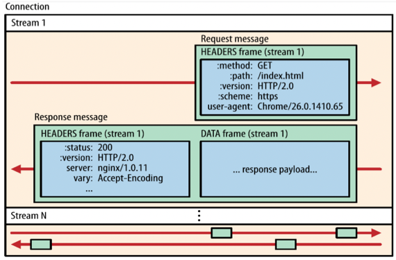
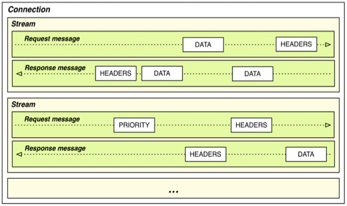
- 그럼 위에있는 그림도 어느정도 이해가 갈거임 - 한개의 Connection안에 여러개의 Stream이 있고 해당 Stream으로 양방향으로 Request와 Response가 오가는 형태
- 따라서 Message들을 어떻게 Frame으로 잘라서 Multiplexing하냐가 관건인데 이를 담당하는 곳이 바로 Binary Framing Layer이다
용어정리
- Binary Framing Layer를 설명하기에 앞서 용어정리를 딱 하고 넘어가면
- Message는 HTTP API에서 사용하는 그 메세지(Line, Header, Body가 7-bit ASCII로 적혀있는)이고
- 즉, 하나의 완성된 Request혹은 Response를 말하는거임
- 그리고 Stream들에 의해 Message들이 Parallel하게 양방향으로 오가고
- Frame은 Multiplexing을 하기 위해 Message를 여러 조각으로 자른 것을 의미한다
- 또한 Multiplexing과 Demultiplexing을 하기 위해서는 이 Frame이 어느 Stream에서 왔는지 알아야 하기 때문에 Stream Identifier가 Frame마다 붙게 된다
- 이 Frame이 HTTP/2 Communication의 제일 작은 단위가 됨
- Message는 HTTP API에서 사용하는 그 메세지(Line, Header, Body가 7-bit ASCII로 적혀있는)이고
Binary Framing Layer
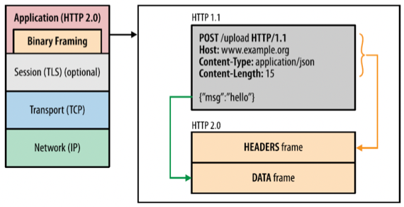
- 얘는 일단 뭐 이름부터가 Layer인 것 처럼 HTTP/2에서의 Sublayer라고 보면 된다 - HTTP 안에서 하부에 위치해있는 Layer
- 따라서 HTTP 상단부를 HTTP API라고 부르고 Binary Framing Layer는 아래의 Socket Layer와 HTTP API사이에 끼어있는 계층이 되는 셈
- 얘가 하는 일은 크게 세가지 인데
- Message를 잘라서 Frame으로 Disintegrate하고
- Frame들을 Binary로 변환하는 일
- 위에서 말한 Streaming과 Multiplexing
- 우선 왜 Frame들을 Binary로 바꾸는 짓을 하나면
- 기존의 Message는 Text-Driven 7-bit ASCII이고 CRLF같은 Delimiter로 한줄한줄이 구분되어 있는데
- 이것을 컴퓨터가 알아듣기 위해서는 마치 Interprete하는 것 같은 과정이 필요하다 - 따라서 Binary로 표현하는 것이 컴퓨터 입장에서는 Compact 한 Representation인 것
- 그리고 위에서 Multiplexing하기 위해 Message들을 Frame단위로 자른다고 했는데 이걸 으케하냐면
- Header는 하나의 Frame안에 다 우겨넣고
- Body는 크기가 클 경우만 Frame들로 소분하게 된다
- 그래서 종합해보면 Binary Framing Layer는 HTTP 메세지들이 어떻게 캡슐화되는지(Encapsulated), 그리고 전송되는지(Transfered)를 담당한다고 생각할 수 있다
- HTTP/2를 이렇게 설계함으로써 HTTP 1.x만을 지원하는 기기와는 통신이 불가능하다는 단점이 있지만
- HTTP API의 변화는 없기 때문에 HTTP를 사용하는 Application에의 변화는 불필요하다는 장점을 취하게 되는 것
Stream Prioritization
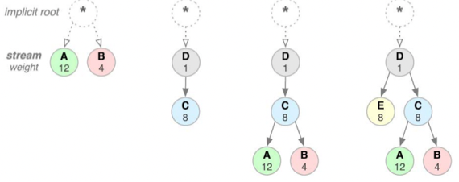
- 근데 이제 원래의 메세지를 Frame단위로 쪼개서 보내게 되면 순서가 중요한 경우에는 받는놈 입장에서 뭐가 앞에 있었고 뭐가 뒤에 있었는지 모른다
- 그래서 위처럼 선후관계를 Edge로 하고, 각각의 Frame에 우선순위가 존재하는 Prioritization Tree를 각 Stream마다 두게 되고 그것을 이용해 Receive를 하게 된다
- 뭐 어떻게 그리는지는 신경쓰지 마셈
Server Push
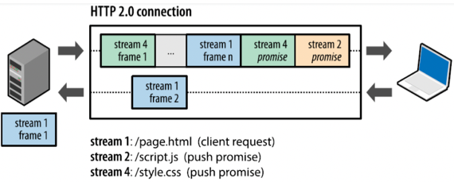
- HTTP는 Server Push라는 기능도 제공하는데 이게 뭐냐면
- Client가 요청을 했을 때 요청한 것 외에도 추가적으로 필요할거 같은 것을 Server가 추가적으로 보내주는 것
- 수동적인 포지션에 있는 Server가 요청받지 않은 것을 자의적으로 파일을 보내주기 때문에 Server Push라는 이름이 붙은거라고 생각하면 됨
- 다르게 말해보면 Request 하나에 대해 Response를 여러개 보내는 것이라고 말할 수도 있는 것
- 서버가 클라이언트가 필요한것을 어케 아냐고 궁금증을 갖지 마셈 - 뭐 적당히 알아낸댄다
- 이렇게 하는 것의 이점은 Client가 요청을 하지 않아도 Server가 연관된 Resource들을 같이 보내주기 때문에 그것들에 대한 요청을 Client가 하지 않아도 되고, 따라서 통신의 Latency가 더 줄어들게 된다
Header Compression
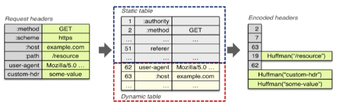
- 얘는 자주 쓰이는 Header Field와 Value 쌍들을 테이블에 저장해놓고 해당 Header 쌍에 대해서는 Header쌍 전체를 보내는 것이 아니라 그 인덱스만 보내서 Header의 크기를 획기적으로 줄이는 방법이다
- 현재 통신과 상관없이 자주 사용되는 Header 쌍에 대해서는 Static Table에 저장이 되어 있고
- 현재 통신에 한정에서 자주 사용되는 Header 쌍은 Dynamic Table에 동적으로 추가가 되는데
- 위의 예제를 보면 method: GET같은 경우에는 경장히 자주 사용되는 Field - Value 이기 때문에 Static Table에 저장이 되어 있고
- host: example.com은 다른 통신에서는 host값이 달라지기 때문에 흔하게 사용된다고 할 수는 없지만 적어도 현재의 통신에서는 여러 Request에 걸쳐 host가 바뀌지 않을 것이기 때문에 Dynamic Table에 드가게 되는 것
- 따라서 이러한 테이블에 근거해서 왼쪽의 Request Header가 오른쪽처럼 축약되는 것이다
- 근데 위의 예시를 보면 Table에 들어있지 않은 Header 쌍에 대해서는 Huffman Code라는 것을 이용해서 표현되게 되는데 이게 뭔지는 궁금하면 찾아보고 그냥 저걸 이용해서 Table에 있지 않은 Header쌍에 대해서도 크기를 줄일 수 있다는 것 정도만 알아두거라